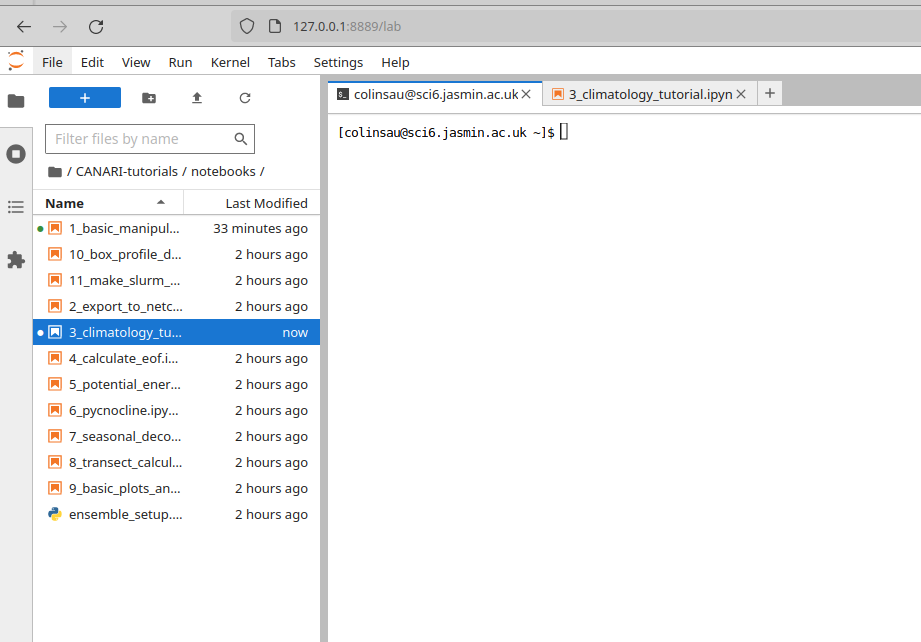

Running on the JASMIN Sci Servers
The JASMIN notebook service only has limited resources and might not be sufficient for some larger datasets. One alternative is to use the Sci servers. These are 7 shared servers which JASMIN users can login to and run code on.
Logging on to the Sci servers
First login to the JASMIN login server (replace
ssh -A <jasminusername>@login-01.jasmin.ac.uk
Do not forget to add the -A option to add your SSH key to the session.
Then login to one of the sci servers, there are 7 of these in total called sci-ph-01, sci-ph-02 and sci-vm-0(1 to 5). The sci-ph systems are physical servers whereas sci-vm are virtual servers.
ssh sci-ph-01
Or this can all be wrapped up in one command using an SSH "jump host" with:
ssh -J <jasminusername>@login-01.jasmin.ac.uk <jasminusername>@sci-ph-01
Activating the shared CANARI environment
Conda is available on the Sci servers through the jaspy module. If this is the first time you have used conda on the sci servers, you will need to run module load jaspy followed by conda init. You'll then need to either launch a new shell session or source your .bashrc file. After this, your prompt should start with (base).
If you want to run any code in the shared CANARI environment then you need to "activate" that enviroment. To do this run:
conda activate /gws/smf/j04/canari/conda-env
Your prompt should now change to start with (/gws/smf/j04/canari/conda-env) to indicate that this environment is now active.
Running a JupyterLab instance on a Sci server
It is recommended that you use your own copy of CANARI environment for this. If you haven't already made one see the instructions in tutorial 3 - Creating Your Own Conda Enviroment. Assuming you ran this tutorial you should have an environment called canari, go ahead and activate this by running:
micromamba activate canari
JupyterLab was already started and can be run with the command:
jupyter-lab
This will put a lot of text onto the screen, but at the bottom it will say something like:
To access the server, open this file in a browser:
file:///home/users/colinsau/.local/share/jupyter/runtime/jpserver-27367-open.html
Or copy and paste one of these URLs:
http://localhost:8889/lab?token=cb9017ebaf05fa72769e7136bbfed6373ddf12e5dd9213d7
http://127.0.0.1:8889/lab?token=cb9017ebaf05fa72769e7136bbfed6373ddf12e5dd9213d7
The JupyterLab is now running on the sci server you are logged into and listening to requests on port 8889 (your port number might be different, pay attention to this!). But to connect to it we need to open another SSH session. Note that you must leave this SSH session/terminal window open, if you press ctrl+c or close it then the JupyterLab session will stop. To open another SSH session open another terminal and run:
ssh -J <jasminusername>@login-01.jasmin.ac.uk -L 8889:localhost:8889 <jasminusername>@sci-ph-01
This will bring up a new terminal logged into sci-ph-01, but it will also forward requests on your own computer's port 8889 to sci-ph-01's port 8889 allowing you to access your Jupyter server on sci-ph-01. Now open a web browser and paste in one of the URLs starting "http://" from the output from starting JupyterLab.

Shutting down your JupyterLab instance
To shutdown your JupyterLab instance press the control key and c at the same time (ctrl+c) in the window where JupyterLab was running. It will ask you Shutdown this Jupyter server (y/[n])? press y and enter and then it will shutdown the JupyterLab instance.